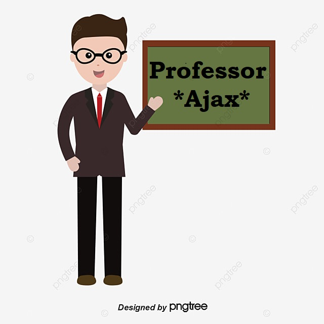
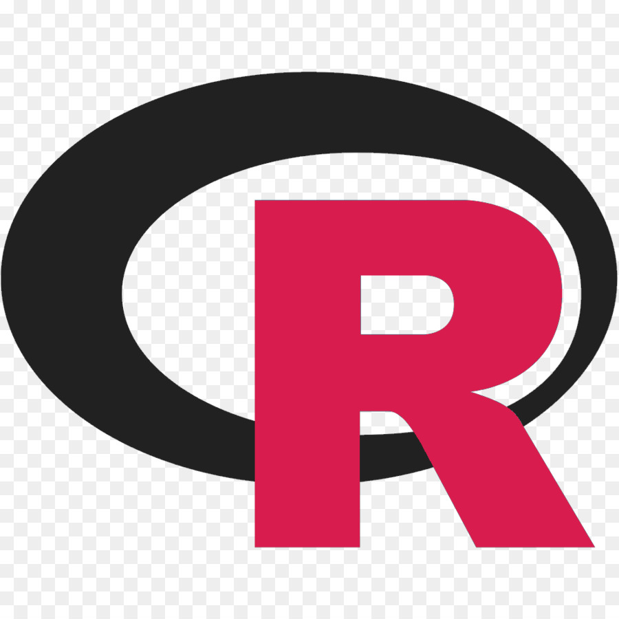

Formado em Análise e Desenvolvimento de Sistemas e Educação Digital, pós-graduação em desenvolvimento Web Full Stack pela PUC.
Ativo no mercado de trabalho, exerço a função de Dev Frontend pelo Banco Safra.
Aulas de Python, C#, R, Java, API do básico ao avançado.
Além de te dar a base de programação vou ter ajudar com currículo, Linkedin e Github para você conseguir a tão sonhada vaga de desenvolvedor.
Você vai poder escrever código Java limpo e bem estruturado, de acordo com todos os padrões estabelecidos por grandes empregadores e projetos top. Vai crescer profissionalmente, poderá receber comentários e conselhos valiosos de desenvolvedores experientes.
Quer seguir uma profissão moderna, está interessado em programação, mas não sabe por onde começar? Com este curso, você irá aprender uma linguagem simples e versátil para se tornar rapidamente um desenvolvedor Back-end de sucesso.
Seja muito Bem Vindo C# Curso Completo: Do Básico ao Avançado!
C# é uma linguagem moderna Orientada a Objetos que possui uma série de recursos fantásticos e é uma das melhores opções para se iniciar no mundo da programação. A linguagem C# faz parte do .NET framework desenvolvido pela Microsoft.
Seja um poliglota na programação! A cada nova linguagem que você aprende, novos conceitos e abordagens são aprendidos e isso sem dúvida te tornará um programador melhor!

R é uma linguagem de programação multi-paradigma orientada a objetos, programação funcional, dinâmica, fracamente tipada, voltada à manipulação, análise e visualização de dados. Foi criado originalmente por Ross Ihaka e por Robert Gentleman no departamento de Estatística da Universidade de Auckland, Nova Zelândia.